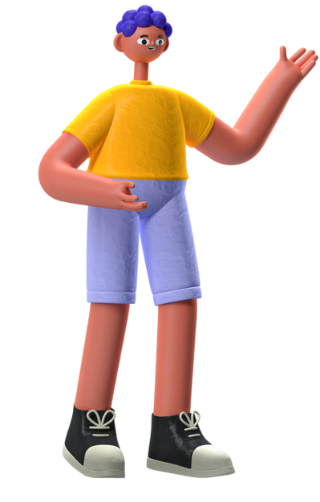

Our Product Is
Home Page
About Product
Superiority
Results
Referensi
Spotify

Cat air dengan bahan alam pertama di Indonesia yang Edukatif
Terintregasi dengan Website yang berisi edukasi tentang keaneka-ragaman tumbuhan dan mental health
Menggunakan ekstraksi tumbuhan untuk mendapatkan zat warna alami